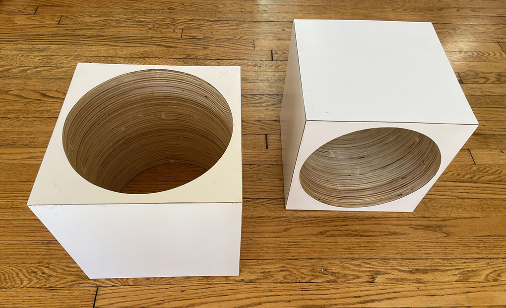

When I was exploring three dimensional arrays for the cellular automaton part of our Algorithmic Botany class, I found a p5js sketch that someone else had made called awesome cube of cubes. I thought it would be pretty amazing if I could figure out how to write a 3D CA sketch where an animation like the Game of Life ran across a grid of cubes. This could be integrated into a project I have been working on for a while now. At the bottom of this page, I adjusted the “awesome cube of cubes” sketch I found and placed it on a background image. I definitely haven't figured out the CA component yet but I am continuing to play with it.
The project that I've been working on building is a series of hollow cubes meant as both admiration and critique of SuperStudio's photo collage series, Continuous Monument. Communities are currently rethinking a lot of their public monuments due to their troublesome historical origins. Made in 1969, Continuous Monument was meant to be a critique of urban planning and architecture. The Monument was theoretical and conceptual architecture, never meant to be built. It was a giant 3d grid laid out spanning the globe, meandering its way through the environment it was situated within: cities, mountains, oceans, deserts.
SuperStudio later produced a line of furniture for Zanotta based on this white grid. They thought of this design approach as the opposite of work; they sought to remove all design labor and simply offer a blank grid. This was meant as a kind of resistance to capitalism and the production of design objects. The irony here is that these pieces of furniture have actually become really expensive and highly desirable, having become art objects at this point. By referencing their Continuous Monument in mass-produced furniture, SuperStudio subverted their own critique of the field “if design is merely an inducement to consume, then we must reject design.”
The cubes I have made (and those in progress) are stack laminated plywood with white formica laminate on all 6 sides. Each one is meant to resemble an individual unit in a nod to the Continuous Monument, and when grouped together as modules they can form tables and other furniture configurations. They are all hollow, made with space for the earth, ideas, communications, and ecologies to flow within and through and about them, rather than to supercede, obscure, or smother the world as Continuous Monument did. I’m in the process of making interchangeable environments that can be put into the hollow spaces.